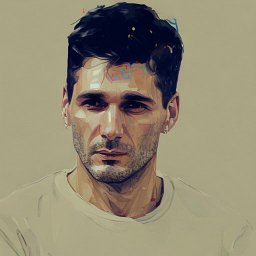
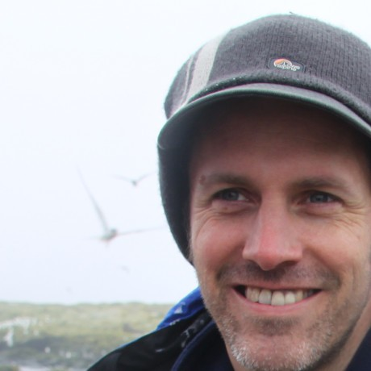

Adam works as a Research Fellow at Queen Mary University of London, specialising in longitudinal models for Natural Language Processing (NLP) and Machine Learning, and their applications in mental health, social science, linguistics and others. His ongoing work involves building temporally sensitive models for capturing changes in the mood of users, based on the content they share online. Prior to his current role, Adam completed his PhD at the University of Warwick (2014-18) and worked as a PDRA and Research Fellow at The Alan Turing Institute and the University of Warwick, respectively (2018-2020), where he worked on various longitudinal (e.g., semantic change detection, capturing the political stance of online users over time) as well as "static" (document-level) NLP tasks (e.g., sentiment analysis).
Post-doctoral Research Associate

Dimitris has been a Postdoctoral Researcher in the group since January 2021. His research focuses on the employment of NLP approaches to decipher dynamic language patterns for automatically extracting individuals' behaviour trajectories in mental health and life sciences. He has also been an affiliated AI consultant at the Huawei Ireland Research Center, leading research efforts aimed at enhancing the understanding of programming language semantics and contributing to research applicaple to Huawei's product development. He holds a PhD from the Open University, UK under the supervision of Prof. Dawei Song. His doctoral research delves into multimodal representation learning for human language understanding, employing the mathematical formalism of Quantum Theory to introduce and deploy novel algorithms. His background lies in information technology (MSc, Aristotle University of Thessaloniki, Greece) and computer science (BSc, Technical University of Crete, Greece).
Research Engineer/Data Scientist

Andy is a Research Data Scientist in the Turing's Research Engineering Group. Before joining the Turing, Andy worked for a small charity who provide mapping and information management support to humanitarian operations for major international emergencies. Over the years, his roles included everything from fixing the printers to leading teams in post-disaster environments, juggling both the operational and analytical sides of the work. Prior to that, he completed his PhD at Newcastle University, exploring flood risk in the UK, modelling the rainfall scenarios likely to cause the most widespread and damaging floods.